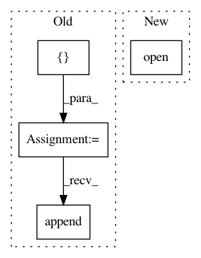

03c767ba99ab2e46e97dc5c27a133fa2c3830aaa,setup.py,,main,#,102
Before Change
data_files = ()
install_requires = [
"numpy >= 1.6",
"iterutils >= 0.1.6",
"prettytable",
"networkx",
"six >= 1.4.0", // 1.4.0 includes six.moves.range.
]
if sys.version_info[:2] == (2, 6):
install_requires.append("ordereddict >= 1.1")
if sys.version_info[:2] <= (3, 3):
install_requires.append("contextlib2")
After Change
install_requires = reqs.read().splitlines()
if sys.version_info[:2] <= (3, 3):
with open("requirements_lt33.txt") as reqs:
install_requires.extend(reqs.read().splitlines())
packages = [
In pattern: SUPERPATTERN
Frequency: 3
Non-data size: 4
Instances
Project Name: dit/dit
Commit Name: 03c767ba99ab2e46e97dc5c27a133fa2c3830aaa
Time: 2015-03-14
Author: ryangregoryjames@gmail.com
File Name: setup.py
Class Name:
Method Name: main
Project Name: commonsense/conceptnet5
Commit Name: 79d149dd39dc7e7d22c623c0a4a4d3ab99e61c76
Time: 2017-06-15
Author: joanna.teresa.duda@gmail.com
File Name: conceptnet5/vectors/transforms.py
Class Name:
Method Name: choose_small_vocabulary
Project Name: shibing624/pycorrector
Commit Name: 52dd8f17b382dea2ddaf3b4054d7845c8c3b4f72
Time: 2018-03-29
Author: 507153809@qq.com
File Name: pycorrector/seq2seq/fce_reader.py
Class Name: FCEReader
Method Name: read_samples_by_string